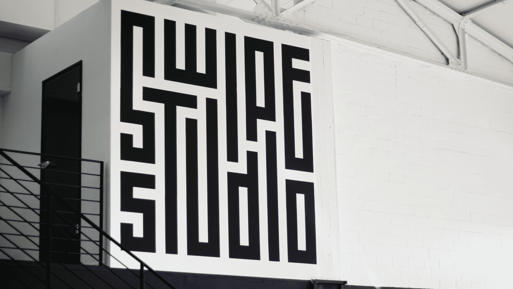

Logo creation

SinnerSchrader Swipe is a Studio specialized in creating awesome mobile experiences. We are a small Team of approximately 30 people in Hamburg and regularly gather together in certain teamevents. This year, we decided to screen print our own custom clothing. For this case, the goal was to create a new custom logomark to represent our studio in a casual way.
After exploring different directions, it became clear that it had to be a typography-inspired approach with a rather bold look. I started sketching out several ideas on paper, and in the end came up with an arrangement of letters and shapes that end up fitting together in a perfect square. I transferred the analog design to digital and refined it furthermore. We ended up screen printing laptop-bags, shirts and hoodies in a variety of sizes and colors - some of which can be seen below.